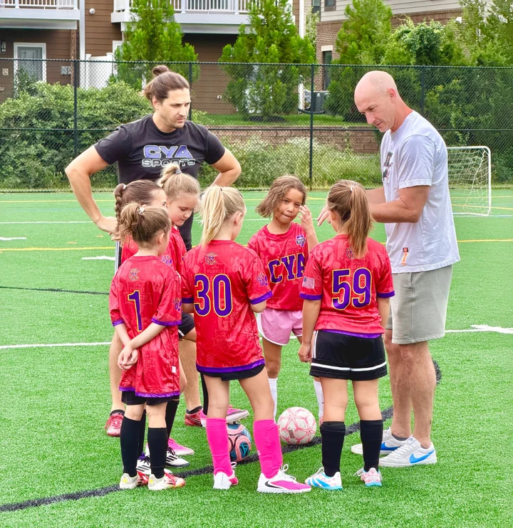
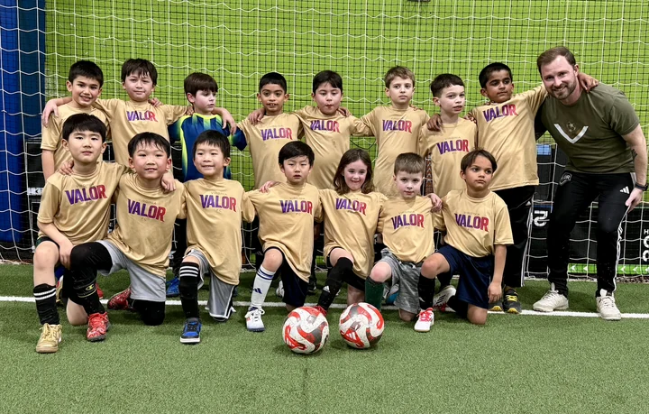
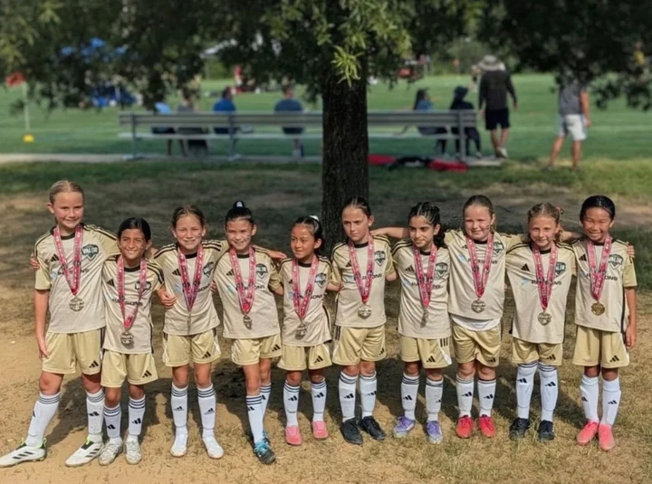
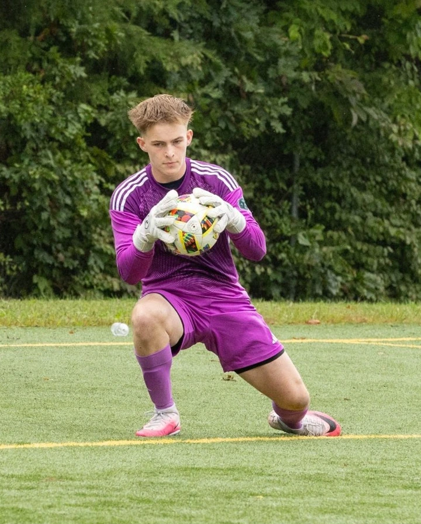

Virginia Valor FC
Player Pathway
Four programs, from a first season of rec soccer to pre-professional play. Choose one to see where your player fits.
-

U4 - U18Grassroots Soccer
Both CYA and SYA Soccer offer U4-U8 recreational soccer programs. Virginia Valor FC is proud to be the travel destination club for both CYA and SYA players.
View program -

U7 - U8Valor U7-U8 Programs
Our Valor Rising programs are designed to provide players with the opportunity to train and prepare for the journey with Virginia Valor FC at U9 through U18.
View program -

U9 - U18Travel Soccer
The Virginia Valor FC program is one of the highest levels of development environments in the region for players U9 through U18 in the Northern Virginia and DMV area.
View program -

Pre-ProPre-Pro Soccer
Our semiprofessional developmental soccer program competes in the CCL Pro 23 and is for college and semi-pro level players.
View program